Interior - Front Seat Cushion Cover Becomes Detached
TECHNICALBulletin No.: 08-08-50-001D
Date: April 06, 2011
Subject: Front Seat Cushion Cover Becomes Detached (Add Push Pin Fasteners to J-Retainer)
Models:
2007-2012 Cadillac Escalade, Escalade ESV, Escalade EXT
2007-2012 Chevrolet Avalanche, Silverado, Suburban, Tahoe
2007-2012 GMC Sierra, Yukon, Yukon Denali, Yukon XL, Yukon Denali XL
with Front Seat RPO Codes AN3, A95, AE7 or AZ3
Supercede:
This bulletin is being revised to update the model years. Please discard Corporate Bulletin Number 08-08-50-001C (Section 08 - Body and Accessories).
Condition
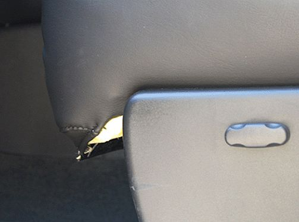
Some customers may comment that the driver or passenger front seat cushion cover is coming detached from the seat frame along the front edge, or that the seat cushion foam has become exposed at the front corner(s) of the seat.
Correction
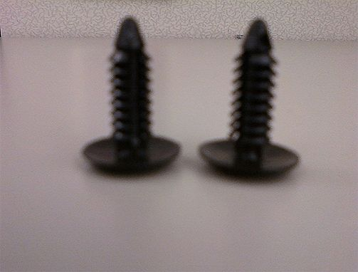
To improve the retention of the front seat cushion cover to the seat frame, modify the cover J-retainer and add two push pin retainers, GM P/N 10121502, to securely attach the J-retainer. Follow the procedure below:
Important
A number of the following graphics show the seat assembly removed from the vehicle. This is for illustration purposes only. Do not remove the seat from the vehicle for this repair.
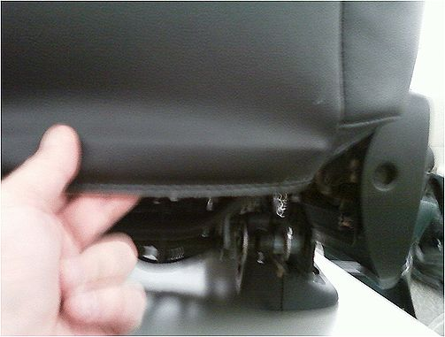
1. Release the seat cushion cover J-retainer from the seat frame and roll the J-retainer/trim completely down.
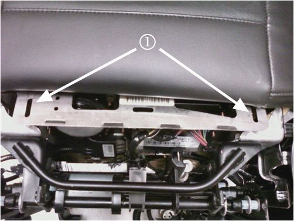
2. Locate the slot on each side of the cushion pan frame by lifting the cushion/cover up and away from the lower edge of the frame to expose the slots (1).
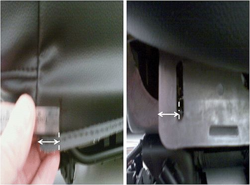
3. Using a ruler and marker, measure and mark the cushion trim to match up with the slots on the cushion pan J-retainer attachment tab location. Repeat this process on the opposite end of cushion trim cover.
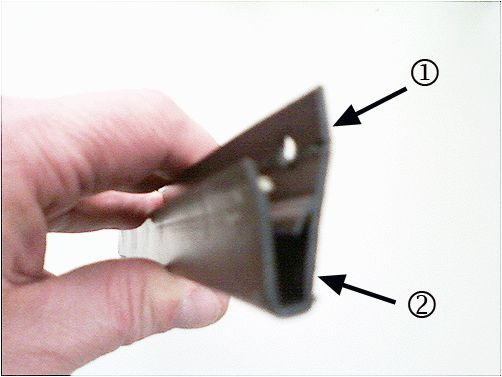
Important
Ensure that the J-retainer is fully unrolled, and that the holes are drilled through the lower edge of the J-retainer (1) and not through the U-channel (2) of the retainer.
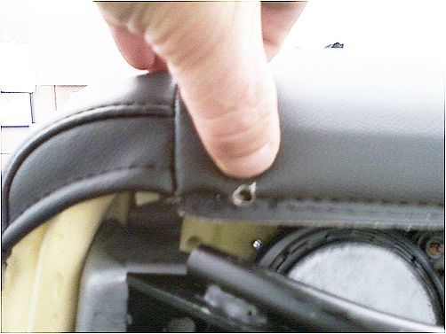
4. Using a drill with a 5/16 drill bit, or equivalent, pierce holes through the trim and plastic J-retainer at the marked locations on each end of the seat cushion trim.
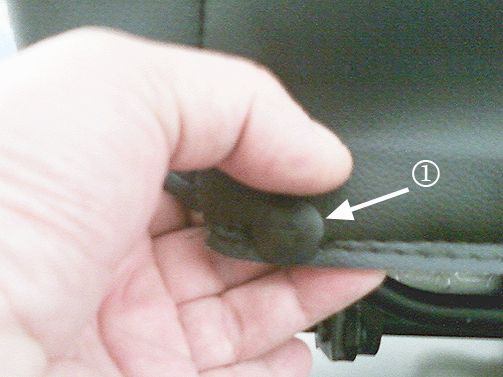
5. Pushing only approximately 1/4 of the way through, insert a push pin retainer (1) into the drilled holes on each side of the J-retainer.
6. Reposition the seat cushion and cover, and roll the J-retainer and trim to install position.
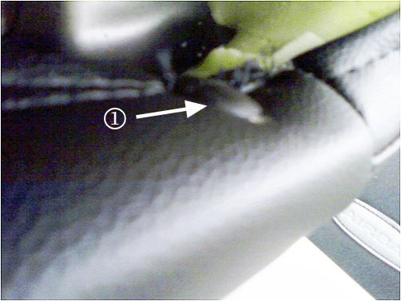
7. Attach the J-retainer to the seat cushion pan on one side by positioning the push pin retainer (1) to the rear side of the slot on cushion pan, and pushing forward to fully seat the push pin in the slot.
8. Repeat step 7 on the opposite end of J-retainer.
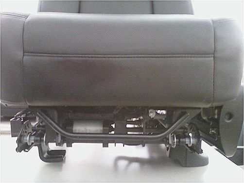
9. The seat cushion cover will now have better retention to the seat frame, and exhibit an improved fit across the forward edge of the seat.
Parts Information
Purchase the tape locally.
Warranty Information
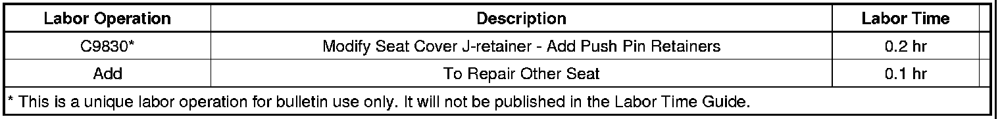
For vehicles repaired under warranty, use the table.

Disclaimer